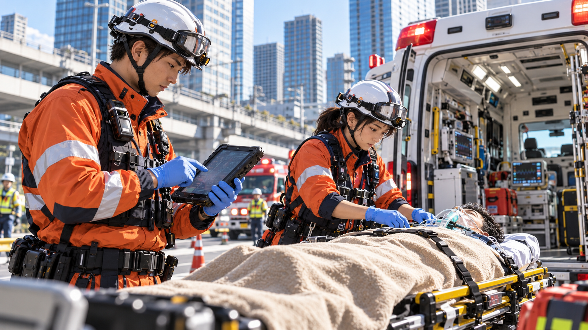
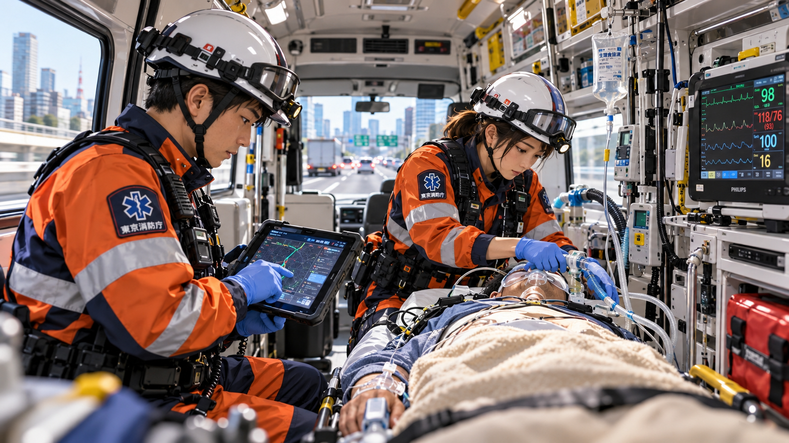
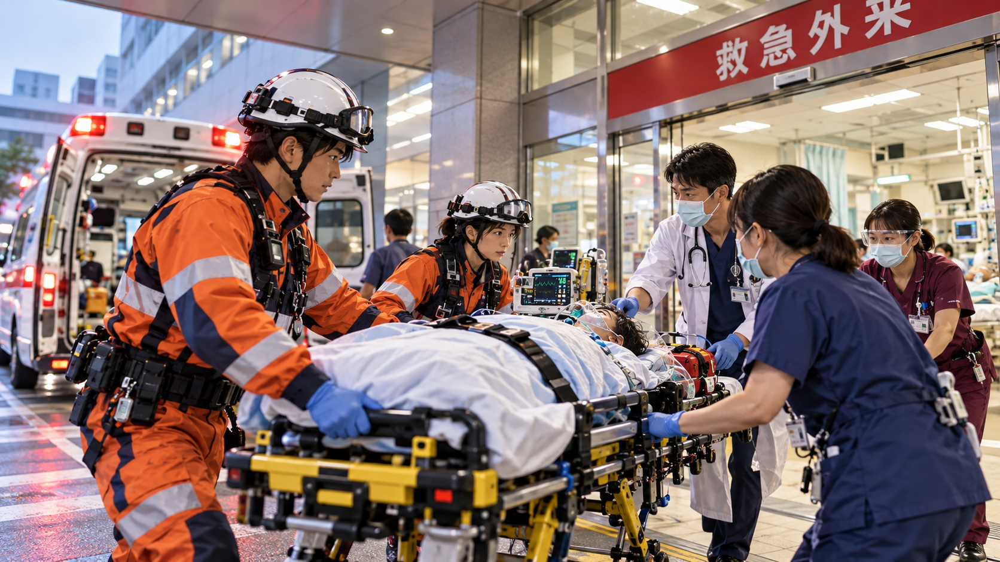

記事００１ 救急DXで搬送時間を短縮
春風市消防本部

救急現場では、傷病者への処置と並行して、受入可能な医療機関を探す必要があります。特に夜間や休日、複数の診療科にまたがる症例では、搬送先の決定に時間を要することも少なくありません。 ●●市消防本部でも、救急隊が現場から複数の医療機関へ電話をかけ、傷病者の年齢や症状、バイタルサインなどを一件ずつ伝えながら受入可否を確認していました。 「電話をかけても受入困難というケースが続くと、その分だけ現場滞在時間が長くなります。隊員にとっても、傷病者や家族にとっても大きな負担でした」 そこで同消防本部が導入したのが、タブレット端末を活用した救急搬送支援システムです。

医療機関をデジタルでつなぐ
救急隊は現場で傷病者情報をタブレット端末に入力。症状やバイタルサイン、観察結果などをシステム上で共有し、受入可能な医療機関を確認します。 これまで電話や紙を中心に行っていた情報伝達をデジタル化することで、救急隊と医療機関の双方が必要な情報を確認しやすくなりました。 また、入力した情報を救急活動記録に活用することで、同じ内容を何度も転記する作業も削減。搬送先選定だけでなく、救急隊員の事務負担軽減にもつながっています。
現場滞在時間の短縮にも期待
導入後は、救急隊が医療機関へ一件ずつ電話をかける回数が減り、搬送先選定がスムーズになるケースが増えました。 一方で、すべての救急事案をデジタルだけで完結できるわけではありません。緊急度の高い症例や、医師への詳細な説明が必要な場合には、従来どおり電話による連絡も併用しています。 重要なのは、デジタル化そのものを目的にするのではなく、「どの業務をデジタルに置き換えると、現場がより動きやすくなるのか」を見極めることです。
DXで生まれた「時間」を救命につなげる

救急DXによって削減できるのは、数分の電話連絡や数分の入力作業かもしれません。 しかし救急現場では、その数分が傷病者の予後を左右する可能性があります。 春風市消防本部では今後、蓄積された救急搬送データの分析にも取り組み、時間帯や地域、症状別の搬送傾向などを把握していく予定です。 「DXによって隊員の仕事を減らすだけではなく、生まれた時間を傷病者の観察や処置に使えるようにしたい」 救急隊、医療機関、そして傷病者をつなぐ救急DX。デジタル技術の導入によって、救急搬送のあり方は少しずつ変わり始めています。